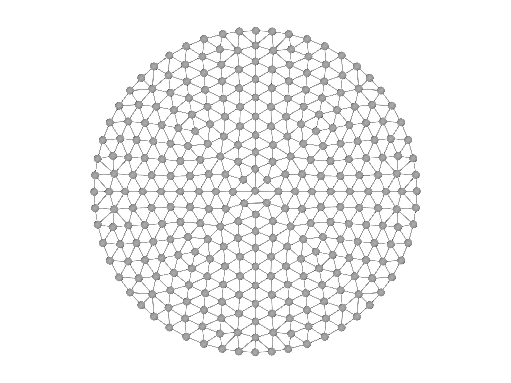
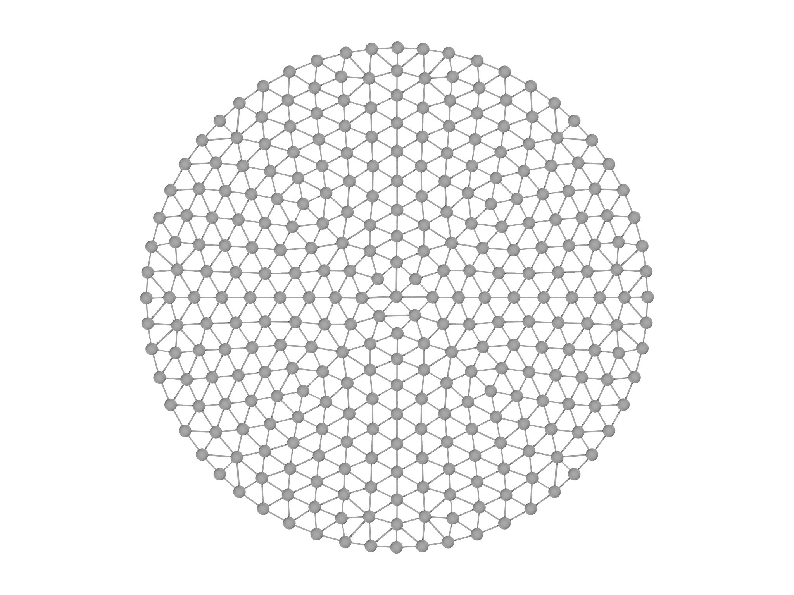
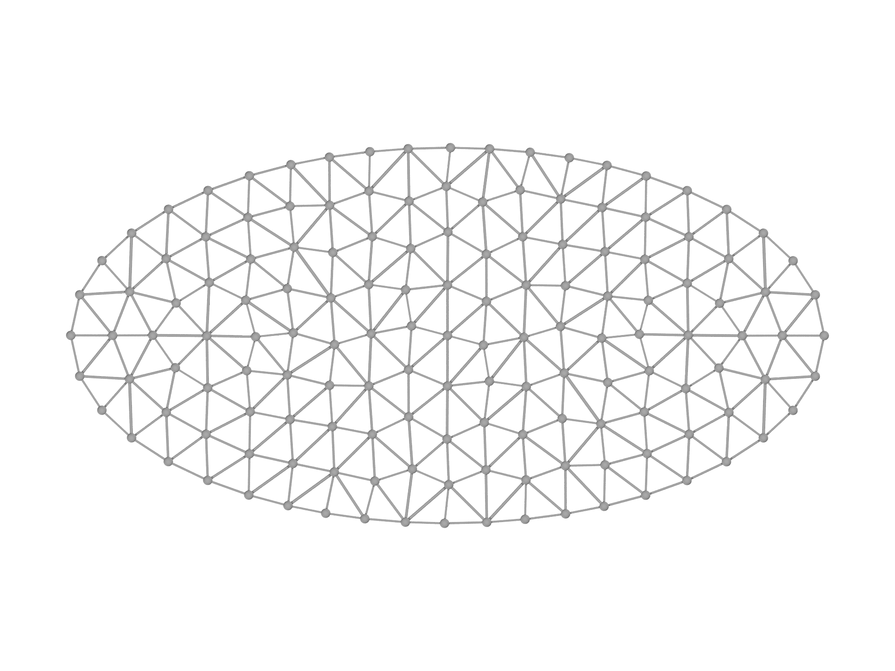
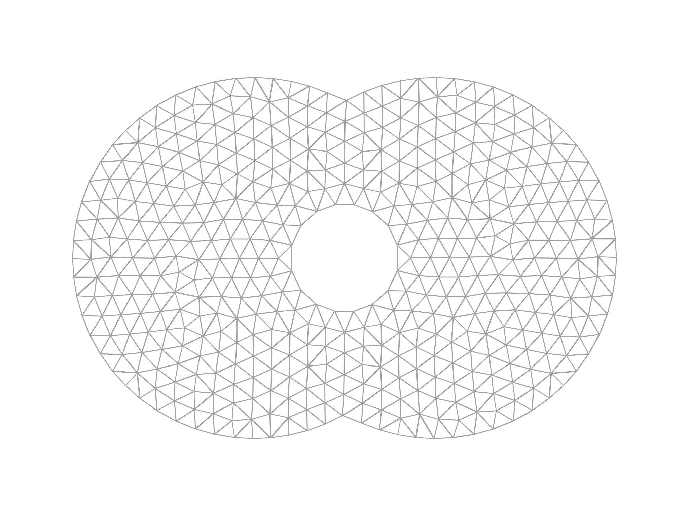

El módulo meshgen
El módulo meshgen produce convenientemente mallas de alta calidad para muchos tipos de dominio. Sigue el patrón del generador con un objeto auxiliar MeshGen que realiza la construcción. Para usar meshgen, el usuario debe proporcionar una función escalar que sea positiva en todos los lugares en los que desea que se malla.
Nota Un ejemplo se conoce en la literatura como una function_ de distancia _con signo, que es la distancia euclidiana de un punto dado \(x\) al límite de un conjunto \(\Omega\) con el signo positivo si \(x\) está en el interior de \(\Omega\). MeshGen no requiere funciones de distancia con signo, pero acepta cualquier función continua y razonablemente suave.
Por ejemplo, el interior del disco unitario en dos dimensiones, se describe mediante la función $$f(x,y)=1-(x^{2}+y^{2}).$$ Para crear la malla correspondiente, primero debemos especificar una función morpho adecuada que describa el dominio. Esta función será llamada repetidamente por MeshGen, que le pasará un vector de posición x. Por lo tanto, se debe acceder a los componentes \((x,y)\) desde el argumento x indexando:
fn disk(x) {
return 1-(x[0]^2+x[1]^2)
}
Ahora que se especifica la función, podemos crear un objeto MeshGen:
var mg = MeshGen(disk, [-1..1:0.2, -1..1:0.2])
El segundo parámetro es una lista de rangos que proporcionan límites generales en el dominio que se va a mallar. Aquí usaremos \(x,y\in[-1,1]\). Al establecer el tamaño del paso, el usuario puede proporcionar a MeshGen una sugerencia general de la resolución.
Por último, creamos el Mesh llamando al método build:
var m = mg.build();
La malla resultante se muestra en la Fig. 5.1, panel izquierdo. Se puede generar una malla de mayor resolución cambiando los objetos Range pasados a MeshGen:
var mg = MeshGen(disk, [-1..1:0.1, -1..1:0.1])
Esto genera una malla de resolución mucho mayor, con aproximadamente cuatro veces el número de vértices como se muestra en la Fig. 5.1, panel derecho.
 

MeshGen también puede mallar dominios más complicados. Para facilitar esto, proporciona una clase Domain que acepta una función escalar en su constructor. Por ejemplo, este código crea una elipse como se muestra en la Fig. 5.2, panel izquierdo:
var e0 = Domain(fn (x) -((x[0]/2)^2+x[1]^2-1))
var mg = MeshGen(e0, [-2..2:0.2, -1..1:0.2])
var m = mg.build()
La ventaja de esto es que los objetos de dominio se pueden combinar utilizando los métodos de operación de conjunto union, intersección y diferencia. Para ilustrar las posibilidades con esto, usamos un constructor especial para crear tres dominios correspondientes a discos,
var a = CircularDomain(Matrix([-0.5,0]), 1)
var b = CircularDomain(Matrix([0.5,0]), 1)
var c = CircularDomain(Matrix([0,0]), 0.3)
luego combínalos,
var dom = a.union(b).difference(c)
y la malla el dominio resultante,
var mg = MeshGen(dom, [-2..2:0.1, -1..1:0.1], quiet=false)
var m = mg.build()
con el resultado que se muestra en la Fig. 5.2, panel derecho.

Las mallas tridimensionales se crean de manera muy similar. Aquí creamos una malla esférica, que se muestra en la Fig. 5.3
var dh = 0.2
var dom = Domain(fn (x) -(x[0]^2+x[1]^2+x[2]^2-1))
var mg = MeshGen(dom, [-1..1:dh, -1..1:dh, -1..1:dh])
var m = mg.build()